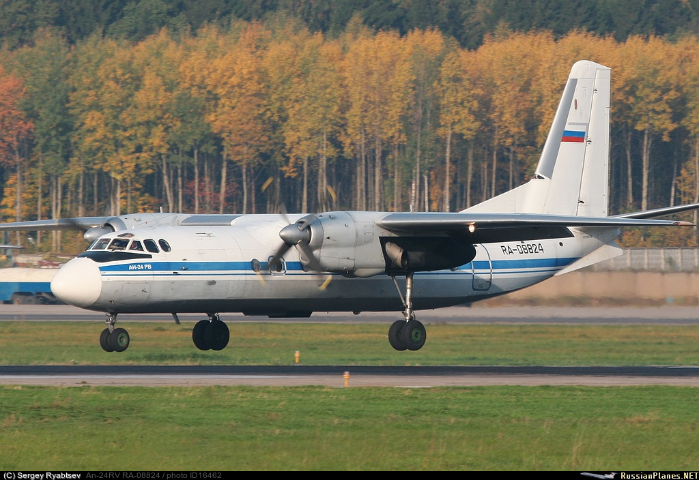

- Ан-2
Ан-2 (разговорное — "Кукурузник") — легкий транспортный самолёт, биплан с расчалочным крылом.
Применяется на местных воздушных линиях в качестве пассажирского и грузового самолета.
Максимальная взлетная масса — 5500 кг
Масса пустого самолета — 3400 — 3900 кг (в зависимости от варианта)
Максимальная посадочная масса — 5250 кг
Масса топлива — 1240 л
Крейсерская скорость — 150-190 км/ч (в зависимости от модификации)
Практическая дальность полета с нагрузкой — 990 км
Практический потолок — 4,5 км
Длина самолета — 12,4 м
Высота самолета — 5,35 м
Размах верхнего крыла- 8,425 м
Размах нижнего крыла — 5,795 м
Экипаж — 2 человека.
Пассажиров — 12 (Ан-2П)
- Ми-8
Ми-8, и его модификации, самый массовый двухдвигательный вертолёт
в мире и является самым массовым вертолётом в истории авиации.
Экипаж – 3 человека.
Максимальная взлетная масса – 13 000 кг.
Двигатель ГТД Климов ТВ3-117 – 2.
Мощность – 2 на 1620 кВт.
Длина – 18,424/25,352 м.
Высота – 4,756/5,552 м.
Максимальная скорость – 250 км/ч.
Практическая дальность полета – 950 км.
Практический потолок – 5000 м.
Полезная нагрузка – до 24 пассажиров или 12 носилок с сопровождающими или 4000 кг груза.
- Ан-24

Ан-24 — турбовинтовой пассажирский самолёт для линий малой и средней протяжённости. Оснащён двумя турбовинтовыми двигателями АИ-24.
Экипаж: 3—5 человек
Пассажировместимость: 48—52 человек
Грузоподъёмность: 6500 кг
Длина: 23,53 м
Размах крыла: 29,20 м
Высота: 8,32 м
Нормальная взлётная масса: 21 000 кг
Масса топлива во внутренних баках: 4850 кг
Максимально допустимая скорость: 460 км/ч
Практическая дальность: 1850 км
Практический потолок: 7700 м
- Ту-154
Среднемагистральный пассажирский самолет Ту-154 разработан в ОКБ А.Н.Туполева.
Он стал первым советским самолетом, который изначально создавался
с большой перспективой использования и совершенствования в соответствии
с требованиями технического прогресса и авиационной безопасности.
Пассажировместимость - 164 – 180
Диаметр фюзеляжа - 3,8 м
Длина самолета - 48 м
Размах крыла - 37,5 м
Высота самолета - 11,4 м
Максимальная взлетная масса - 104 т
Коммерческая нагрузка - 18 т
Крейсерская скорость - 850 – 900 км/ч
Дальность полета - 4000 км